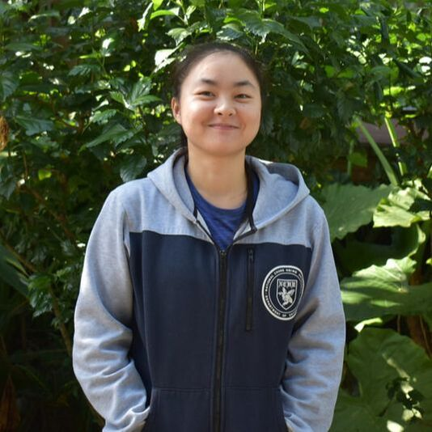
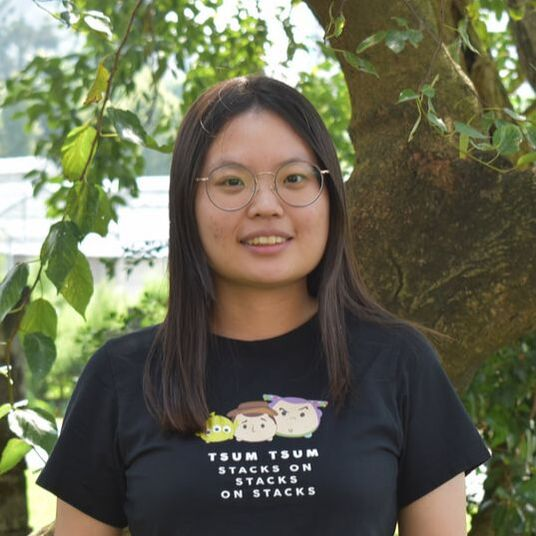

PRINCIPAL INVESTIGATOR
WEN-PO CHuang
Professor
Department of Agronomy, National Taiwan University
Email: wenpo@ntu.edu.tw
Phone: +886-233664790
RESEARCH INTERESTS
PLANT RESISTANCE TO INSECTS, PLANT DEFENSE MECHANISM, AND PLANT-INSECT INTERACTION
PROFESSIONAL EMPLOYMENTS
- 2024-present
- PROFESSOR
DEPARTMENT OF AGRONOMY, NATIONAL TAIWAN UNIVERSITY, TAIWAN
Joint employment in Master Program of Plant Medicine, NTU
Institute of Ecology and Evolutionary Biology, NTU (Effective 2026) - 2020-2024
- ASSociate PROFESSOR
DEPARTMENT OF AGRONOMY, NATIONAL TAIWAN UNIVERSITY, TAIWAN
Joint employment in Master Program of Plant Medicine, NTU - 2014-2020
- ASSISTANT PROFESSOR
DEPARTMENT OF AGRONOMY, NATIONAL TAIWAN UNIVERSITY, TAIWAN - 2012-2014
- POSTDOCTORAL RESEARCH ASSOCIATE
DEPARTMENT OF ENTOMOLOGY, KANSAS STATE UNIVERSITY
ACADEMIC QUALIFICATIONS
- 2006 – 2012
- PH.D., DEPARTMENT OF CROP AND SOIL SCIENCES, THE PENNSYLVANIA STATE UNIVERSITY, UNIVERSITY PARK, PA
- 1998 – 2002
- B.S., DEPARTMENT OF AGRONOMY, NATIONAL TAIWAN UNIVERSITY, TAIPEI, TAIWAN
PROFESSIONAL sERVICES
- LECTURER AT SCHOOL OF PROFESSIONAL EDUCATION AND CONTINUING STUDIES,
NATIONAL TAIWAN UNIVERSITY, TAIPEI, TAIWAN. (since 2014) - Awards committee of International Branch of Entomological Society of America. (since 2017)
- Consultant, Fall Armyworm IPM,
Animal and Plant Health Inspection Agency, Ministry of Agriculture, Taiwan. (2019-2024) - councilor, asia-pacific association of chemical ecologist (2020-2025)
- Extension Professor, Committee of Agricultural Extension,
NATIONAL TAIWAN UNIVERSITY, TAIPEI, TAIWAN. (2021-2023) - Drafter-grader, National High School Skills Competition of Agriculture, K-12 Education Administration, Ministry of Education, Taiwan. (since 2021)
- Assessor, Taiwan accreditation foundation (since 2021)
- DEPUTY SECRETARY-GENERAL OF WEED SCIENCE SOCIETY OF REPUBLIC OF CHINA, TAIWAN. (2023-2024)
- Chair, 26th Biannual International Plant Resistance to Insects Symposium (IPRI2024)
For Prospective Students:
If you are interested in joining this lab and also really want to find something interesting in plant-insect interaction,
please email to wenpo@ntu.edu.tw
If you are interested in joining this lab and also really want to find something interesting in plant-insect interaction,
please email to wenpo@ntu.edu.tw
Postdoctoral researcher
Research assistant

Master STUDENTS
